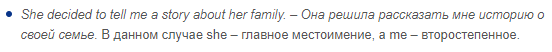
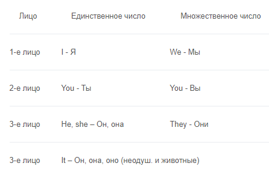
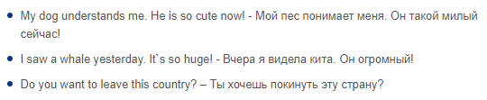

Личные местоимения в английском языке
Это такие слова, которые мы используем для замены действующего лица. При этом действующее лицо бывает главным (отвечает на вопрос «кто?» и используется как именительный падеж) и второстепенным («кого?», косвенный падеж). Например:
Также местоимения можно разделить по еще одному признаку: единственное число и множественное число. Для легкого запоминания рекомендуем воспользоваться таблицей ниже:
Не пугайтесь совпадения форм для слов ты и вы, конкретное значение будет легко определить по контексту высказывания. Если речь идет о людях, то, само собой, применяются местоимения he, she или they.
Говоря про неодушевленные предметы, используйте местоимение it.Если неодушевленные предметы во множественном числе, то мы говорим про них - they. А вот с животными не все так просто. В отношении домашних любимцев можно говорить he и she. Для других животных грамотнее использовать местоимение it.
Вот несколько примеров для закрепления:
